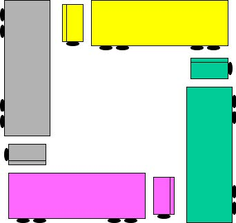

Topic: Deadlocks
Team 4: Tuan Hoang, Hoang Le, Hai Nguyen, Thanh Nguyen, Tue Nguyen.
Created with üíñ by Tuan Hoang
Locking Multiple Resources
- Locks protect access to shared resources.
- Threads may need multiple shared resources to perform some operation.
Ensuring Progress
- Schedulers try to schedule jobs efficiently.
- Assume that the threads make progress.
- If they are all just waiting for each other or spinning in loops, the scheduler cannot help much.
Let’s see what sorts of problems we might fall into and how to avoid them
Dining Philosophers [Dijkstra 68]
Let's be more clear about it
- Philosophers go out for Chinese food
- Need exclusive access to 2 chopsticks to eat food
- N processes share N resources
- resource requests occur in pairs
- random think times
- hungry philosopher grabs a fork
- ...and doesn’t let go
- ...until the other fork is free
- ...and the linguine is eaten

Starvation vs. Deadlock
Starvation: thread waits indefinitely
Deadlock: circular waiting for resources
Deadlock ⇒starvation, but not vice versa
Deadlock happens
Self Deadlock
A single thread can deadlock. How?
Thread A acquires Resource 1. Thread A tries to reacquire Resource 1.This seems insane. Why would this happen?
foo() needs Resource 1. bar() needs Resource 1. While locking Resource 1 foo() calls bar().Can we solve this problem?
Yes! Recursive locks. Allow a thread to reacquire a lock that it already holds, as long as calls to acquire are matched by calls to release. This kind of problem is not uncommonExample: Single-Lane Bridge Crossing

Bridge Crossing Example
-
Each segment of road can be viewed as a resource
- Car must own the segment under them
- Must acquire segment that they are moving into
- Deadlock: Two cars in opposite directions meet in middle
- Resolving deadlock: “Preempt” road segment, force one car (or several cars) to back up
- Prevent deadlock: make sure cars facing opposite directions don’t enter the bridge simultaneously
- Starvation (not deadlock): Eastbound traffic doesn’t stop for westbound traffic
Deadlock with Locks
- Thread 1 and Thread 2 both need two locks, but grab them in different orders
- Under what conditions does deadlock occur?
- Why might this code run many times with no problem?
- How do you fix it?
Necessary Conditions for Deadlock
A deadlock cannot occur unless all of the following conditions are met:
- Acquire can block invoker.(Protect Access)
- Hold & wait. A process can be blocked while holding resources. (Multiple independent requests)
- No resources preemption. Allocated resources cannot be reclaimed. Explicit release operation needed.
-
Circular waits are possible.
Let p ⇒ q denotep waits for q to release a resource
. Then P1 ⇒ P2 ⇒ … Pn ⇒ P1
Is this a Deadlock?
Truck A has to wait for Truck B to move
Is this a Deadlock?
Gridlock
Is this a Deadlock?
Is this a Deadlock?
Deadlock Detection
-
Create a Wait For Graph
- 1 Node per Process
- 1 Edge per Waiting Process, P (from P to the process it’s waiting for)
Note: graph holds for a single instance in time
Cycles in graph indicate deadlock
Deadlock Detection Algorithm
- Only one of each type of resource ⇒ look for loops
-
More General Deadlock Detection Algorithm
-
Let [X] represent an m-ary vector of non-negative integers
(quantities of resources of each type):
[FreeResources]: Current free resources each type [RequestX]: Current requests from thread X [AllocX]: Current resources held by thread X - See if tasks can eventually terminate on their own
-
Let [X] represent an m-ary vector of non-negative integers
(quantities of resources of each type):
[Avail] = [FreeResources]
Add all nodes to UNFINISHED
do {
done = true
Foreach node in UNFINISHED {
if ([Requestnode] <= [Avail]) {
remove node from UNFINISHED
[Avail] = [Avail] + [Allocnode]
done = false
}
}
} until(done)
• Nodes left in UNFINISHED ⇒ deadlocked
Question #1
Does order of reduction matter?
Answer: No.
Question #2
If a system is deadlocked, could the deadlock go away on its own?
Answer: No, unless someone kills one of the threads or something causes a process to release a resource.
Process may be forced to terminate itself because often, if a process can’t get what it needs, there are no other options available!
Question #3
Suppose a system isn’t deadlocked at time T. Can we assume it will
still be free of deadlock at time T+1?
Answer: No !!!
… establishing a cyclic wait
… and causing deadlock
Proactive Responses to Deadlocks
-
Let’s not deadlock, okay?
-
Deadlock Prevention: make it impossible
- Prevent 1 of the 4 necessary conditions from arising ……. disaster averted!
Deadlock Prevention: Negate 1 of 4
-
#1 Mutual exclusion / Bounded Resources
- Make resources sharable without locks?
- Make more resources available?
- Not always possible ( e.g., printers)
Deadlock Prevention: Negate 2 of 4
# 2 Hold and wait
-
Don’t hold resources when waiting for another
-
Re write code:
Module:: foo() lock.acquire(); doSomeStuff(); otherModule --> bar(); doOtherStuff(); lock.release();}Module:: foo() doSomeStuff(); otherModule--> bar(); doOtherStuff(); } -
Request all resources before execution begins
- Processes don’t know what they need ahead of time
- Starvation (if waiting on many popular resources)
- Low utilization (need resource only for a bit)
Optimization: Release all resources before requesting anything new? Still has last two problems üòû
Deadlock Prevention: Negate 3 of 4
#3 No preemption
-
Allow runtime system to pre-empt:
- Requesting processes’ resources if all not available
- Resources of waiting processes to satisfy request
-
Good when easy to save restore state of resource
- CPU registers
- memory virtualization (page memory to disk, maybe even page tables)
Deadlock Prevention: Negate 4 of 4
# 4 Circular Wait
- Single lock for entire system?
- Impose partial ordering on resources, request in order
Intuition: Cycle requires an edge from low to high, and from high to low numbered node, or to same node
Preventing Dining Philosophers Deadlock?
class Philosopher:
chopsticks[N] = [Semaphore(1),…]
def __init__(mynum)
self.id = mynum
def eat():
right = self.id % N
left = (self.id+ 1 ) % N
while True:
P(left)
P(right)
# om nom nom
V(right)
V(left)
- Bounded Resources
- Hold & Wait
- No Pre-emption
- Circular Wait
Can we prevent one of these conditions? Ideas?
Proactive Responses to Deadlocks
-
Let’s not deadlock, okay?
-
Deadlock Prevention: make it impossible
- Prevent 1 of the 4 necessary conditions from arising ……. disaster averted!
-
Deadlock Avoidance: make it not happen
- Think before you act
Deadlock Avoidance
-
How do cars do it?
- Try not to block an intersection
- Don’t drive into the intersection if you can see that you’ll be stuck there.
-
Why does this work?
- Prevents a wait for relationship
- Cars won’t take up a resource if they see they won’t be able to acquire the next one…
Deadlock Dynamics
-
Safe state:
- It is possible to avoid deadlock and eventually grant all resource requests by careful scheduling
- May require delaying a resource request even when resources are available! Unsafe state:
- Some sequence of resource requests can result in deadlock even with careful scheduling Doomed state:
- All possible computations lead to deadlock Deadlocked state:
- System has at least one deadlock
Possible System States
Safe State
- A state is said to be safe , if there exists a sequence of processes [P1 , P2 ,…, Pn ] such that for each Pi the resources that Pi can still request can be satisfied by the currently available resources plus the resources held by all Pj where j < i
-
State is safe b/c OS can definitely avoid deadlock
- block new requests until safe order is executed
-
Avoids circular wait condition
- Process waits until safe state is guaranteed
Safe State Example
Suppose: 12 tape drives and 3 processes: p0, p1, and p2
| max need | current usage | could still ask for | |
|---|---|---|---|
| p0 | 10 | 5 | 5 |
| p1 | 4 | 2 | 2 |
| p2 | 9 | 2 | 7 |
3 drives remain
Current state is safe because a safe sequence exists: [p1, p0, p2]
- p1 can complete with remaining resources
- p0 can complete with remaining+p1
- p2 can complete with remaining+p1+p0
What if p2 requests 1 drive? Grant or not?
Banker’s Algorithm
from 10,000 feet:
- Process declares its worst case needs, asks for what it “really” needs, a little at a time
-
Algorithm decides when to grant requests
- Build a graph assuming request granted
- Reducible? yes: grant request, no: wait
-
Problems:
- Fixed number of processes
- Need worst case needs ahead of time
- Expensive
Wanna implement it?
Here is pseudo code üòé
[Avail] = [FreeResources]
Add all nodes to UNFINISHED
do {
done = true
Foreach node in UNFINISHED {
if ([Maxnode]-[Allocnode] ≤ [Avail]) {
remove node from UNFINISHED
[Avail] = [Avail] + [Allocnode]
done = false
}
}
} until(done)
Banker’s Algorithm (less conservative)
- Allocate resources dynamically
- Keeps system in a “SAFE” state
- Algorithm allows the sum of maximum resource needs of all current threads to be greater than total resources
Banker’s Algorithm Example
Feeding Philosophers
-
Don’t wait: don’t sleep if you can’t grab the
second chopstick and put down the first.
- Not last chopstick
- Is last chopstick but someone will have two afterwards
- Break cycles: usually by acquiring resources in a well-defined order. Number chopsticks 0–4, always grab the higher-numbered chopstick first.
Why would we not told them?
- Break out: detect the deadlock cycle and forcibly take away a resource from a thread to break it.
- Don’t make multiple independent requests: grab both chopsticks at once.
Requires a new mechanism.
Reactive Responses to Deadlocks
If neither avoidance or prevention is implemented, deadlocks can (and will) occur. Now what?
Detect & Recover
Deadlock Detection
- Track resource allocation (who has what)
- Track pending requests (who’s waiting for what)
-
When should we run this?
- For each request?
- After each unsatisfiable request?
- Hourly?
- Once CPU utilization drops below a threshold?
- Some combination of these?
Deadlock Recovery
Blue screen & reboot?
-
Kill one/all deadlocked processes
- Pick a victim
- Terminate
- Repeat if needed
-
Preempt resource/processes till deadlock broken
- Pick a victim (# resources held, execution time)
- Rollback (partial or total, not always possible)
- Starve (prevent process from being executed)
Summary
-
Prevent
- Negate one of the four necessary conditions. Avoid
- Schedule processes really carefully (?) Detect
- Determine if a deadlock has occurred Recover
- Kill or rollback
Thank you for comming
Tuan Hoang, Hoang Le, Hai Nguyen, Thanh Nguyen, Tue Nguyen